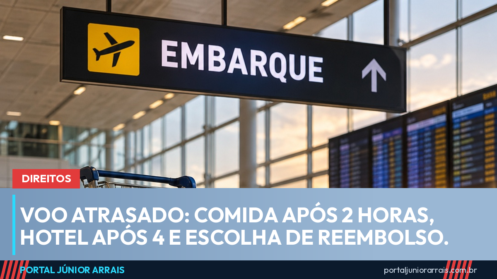

Voo atrasado ou cancelado: o que a companhia aérea deve oferecer e quando cabe indenização

Quando o voo atrasa ou é cancelado, a companhia aérea tem obrigações que não dependem de culpa. Pelas regras da ANAC (Resolução 400/2016, com as mudanças da Resolução 813/2026), o passageiro tem direito a alimentação a partir de 2 horas de espera e a hospedagem com transporte a partir de 4 horas, quando for preciso passar a noite. Se o atraso passar de 4 horas ou o voo for cancelado, ele escolhe entre reacomodação, reembolso ou viagem por outro meio de transporte. Já a indenização por dano moral não é automática.
A companhia precisa avisar
A empresa deve informar o passageiro sobre atraso, cancelamento ou interrupção assim que souber do problema, inclusive por canais digitais, e manter a informação atualizada. O aviso precisa trazer a situação do voo, a nova previsão de partida, as alternativas disponíveis e o modo de obter a assistência. Nos canais digitais, deve aparecer a data e a hora da última atualização. Essas regras vieram com a Resolução 813/2026, com vigência a partir de 26 de outubro de 2026.
Assistência material em cada espera
A assistência é devida mesmo quando o atraso tem causa como mau tempo. Conforme o tempo de espera:
- mais de 2 horas: alimentação adequada, por voucher, refeição ou solução equivalente;
- mais de 4 horas, quando houver pernoite: hospedagem e transporte de ida e volta entre o aeroporto e o local de hospedagem. Quem mora na cidade do aeroporto de origem pode receber só o transporte até em casa, sem custo.
Pessoa com deficiência ou mobilidade reduzida e seu acompanhante têm direito à hospedagem mesmo sem pernoite, salvo se concordarem com outra acomodação adequada. A antiga previsão de facilidades de comunicação após 1 hora de espera foi retirada pela Resolução 813/2026.
Em situações excepcionais, como falta de estrutura no aeroporto ou de fornecedores, a companhia pode reembolsar os gastos com comida, transporte e hotel, desde que sejam necessários, razoáveis e comprovados. O reembolso deve sair em até 7 dias após a entrega dos comprovantes. Por isso, guarde notas fiscais e recibos.
Reacomodação, reembolso ou outro transporte
Se o atraso passar de 4 horas, se o voo for cancelado ou interrompido, ou se o passageiro for impedido de embarcar por excesso de reservas, a escolha é dele:
- reacomodação sem custo, na primeira oportunidade, em voo para o mesmo destino, inclusive de outra empresa, ou em data e horário de sua conveniência em voo da mesma companhia;
- reembolso em até 7 dias a contar do pedido, pelo mesmo meio de pagamento usado na compra. Receber em créditos só vale se o passageiro concordar;
- execução do serviço por outra modalidade, como ônibus, quando isso servir para o trajeto.
Indenização não é automática
Desde a Lei 14.034/2020, o Código Brasileiro de Aeronáutica diz, no art. 251-A, que a indenização por dano moral por falha no transporte depende da demonstração do prejuízo e da sua extensão. O Superior Tribunal de Justiça já decidia nessa linha: no REsp 1.584.465/MG, a 3ª Turma afirmou em 2018 que o dano moral em atraso de voo não é presumido. Pesam o tempo de espera, a assistência e as alternativas oferecidas e a existência de algum fato extraordinário, como a perda de um compromisso importante.
A Resolução 813/2026 também repete que caso fortuito e força maior afastam a responsabilidade da empresa, nos termos da lei. O Procon-SP criticou esse ponto, e a discussão deve seguir na Justiça. Por isso, junte provas: cartão de embarque, prints do aplicativo e do painel, comprovantes de gastos e documentos do compromisso perdido.
Onde reclamar
Primeiro, peça a solução à companhia e anote o protocolo. Sem resposta, registre reclamação no consumidor.gov.br, no Procon da sua cidade ou na plataforma da ANAC. Se houver prejuízo a reparar, procure um profissional de sua confiança.
Cuidado com golpe
Passageiro que reclama em rede social costuma ser procurado por perfis falsos que imitam o atendimento da companhia aérea. Eles pedem o código da reserva, dados do cartão ou um Pix para "taxa de remarcação" ou para "liberar o reembolso". É um dos roteiros de golpe mais repetidos.
Companhia aérea não cobra Pix para devolver dinheiro, e o reembolso volta pelo mesmo meio usado na compra. Use só os canais do site oficial e do bilhete. Na dúvida, não pague e procure um profissional de sua confiança.
Conteúdo informativo — não substitui orientação individualizada sobre o seu caso.
Júnior Arrais · Editor do Portal Júnior Arrais
Comunicador de Ubá (MG). Escreve todos os dias sobre benefícios sociais, INSS, trabalho e economia do dia a dia, a partir do Diário Oficial, de portarias e de fontes oficiais, em linguagem simples. Conheça a linha editorial e a política de correções do portal.